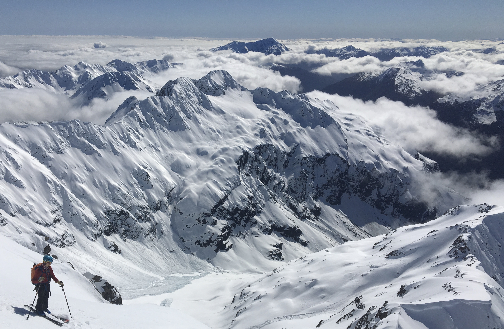

About and Acknowledgement
A snapshot of a ski mountaineering trip, my favorite form of backcountry recreation.
This project is created by Thomas Kakatsakis. I grew up in Boulder, Colorado and attend the University of Washington here in my new home, Seattle, WA. This project encorporates many topics I am passionate about including: backcountry recreation, avalanche safety, climate change, mapping, and spatial analysis. This site is created as part of an independent research project for the senior year of my undergraduate degree.
This project is conducted under the mentorship of Dr. Suzanne Withers. Without Dr. Withers this research would not have been possible.
Additional support has been provided by:
- Mary Gates Research Scholarship, 2021
- University of Washington Geography Department
- Dr. Steven Walters - Earth and Space Sciences Department
- Dr. David Shean - Civil and Envirornmental Engineering Department
- Devyn Duvall
- Xan Dindinger-Hill
Backcountry Winter recreation is an inherently dangerous activity and appropriate education and understanding of risk is required.
The outdoors are for all to enjoy, go outside today!
A lightning talk presentation, created for the Mary Gates Research Symposium and Deparment of Geography Undergraduate Research Symposium